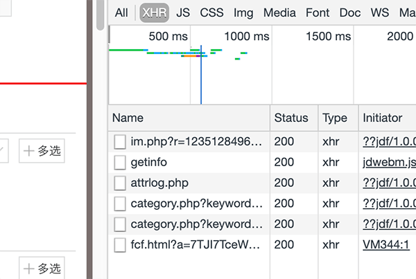
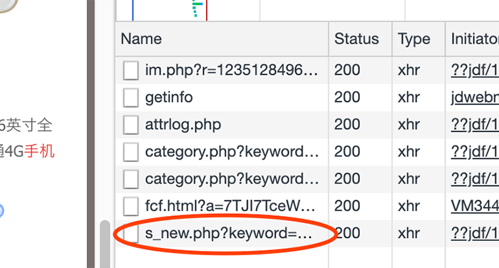

Python爬虫-爬取京东商品
因为要教实验室的其他“小朋友”，所以自己要在课余时间学下 Python，昨天突发奇想，之前在爬取淘宝的过程中免不了遇到问题，那么在爬取其他网站的时候也会遇到问题。俗话说：问题才是最好的老师。（PS：编的）那么就不墨迹，目标一转，爬一下京东，练练手，本文不对代码做过多讲解，只讲解遇到的问题。
首先查一下京东的 robots 协议？（一直看不太懂，还得好好查，嗯～）内容如下：
1
2
3
4
5
6
7
8
9
10
11
12
| User-agent: *
Disallow: /?*
Disallow: /pop/*.html
Disallow: /pinpai/*.html?*
User-agent: EtaoSpider
Disallow: /
User-agent: HuihuiSpider
Disallow: /
User-agent: GwdangSpider
Disallow: /
User-agent: WochachaSpider
Disallow: /
|
emmmm…我这小程序，嗯没啥影响，爬吧(>^ω^<) 。
进入京东主页，在搜索框中搜索“手机”回车。我们发现链接跳转到了以“https://search.jd.com/”开头的页面。
默认链接如下：
1
| https://search.jd.com/Search?keyword=手机&enc=utf-8&wq=手机&pvid=6e7105bfd9294f7480ce2ab531eae353
|
手机是我们搜索的关键词，后面的 id 啥的看不懂，不管，跳转到下一页面。我们取出第二、三页找找规律。
1
2
| https://search.jd.com/Search?keyword=手机&enc=utf-8&qrst=1&rt=1&stop=1&vt=2&wq=手机&cid2=653&cid3=655&page=3&s=56&click=0
https://search.jd.com/Search?keyword=手机&enc=utf-8&qrst=1&rt=1&stop=1&vt=2&wq=手机&cid2=653&cid3=655&page=5&s=108&click=0
|
我们可以发现如下规律：
- 前面部分基本一样，之后搜索的 &keyword 变化；
- &page 表示的是页面，规律是 i*2-1；
- &s 没找到规律，不管；
我们通过这个规律就可以获取到对应的每个 html 页面了。
获取到 html 页面后，在商品信息中寻找，找到商品价格和名称对应的，是 p-price 和 p-name 为类的两个 div。
我们通过 BeautifulSoup 获取对应的 dom 元素，提取其中的信息。然后写入，打印即可。
源码如下：
1
2
3
4
5
6
7
8
9
10
11
12
13
14
15
16
17
18
19
20
21
22
23
24
25
26
27
28
29
30
31
32
33
34
35
36
37
38
39
40
41
42
43
44
45
46
47
48
49
50
51
52
53
54
55
56
57
58
59
60
61
62
63
64
65
66
67
68
69
70
71
|
import requests
from bs4 import BeautifulSoup
import time
import re
def getHTMLText(url, code='utf-8'):
head = {
'referer': 'https://search.jd.com/',
'user-agent': 'Mozilla/5.0 (Windows NT 6.1; Win64; x64) AppleWebKit/537.36 (KHTML, like Gecko) Chrome/66.0.3359.139 Safari/537.36',
'Cookie': 'dasgfagda'
}
try:
r = requests.get(url, timeout=30, headers=head)
r.raise_for_status()
r.encoding = code
return r.text
except:
return "获取URL页面失败"
def parsePage(ilt, html):
try:
soup = BeautifulSoup(html, 'html.parser')
nameInfo = soup.find_all('div', attrs={'class': 'p-name'})
priceInfo = soup.find_all('div', attrs={'class': 'p-price'})
for i in range(len(nameInfo)):
titlelst = nameInfo[i].find('em').text.split()
name = ""
for j in range(len(titlelst)):
name = name + titlelst[j] + " "
price = priceInfo[i].find('strong').text
if (price == '￥'):
price = '￥' + priceInfo[i].find('strong')['data-price']
ilt.append([price, name])
except:
print("解析HTML内容失败")
def printGoodList(ilt):
tplt = "{:4}\t{:8}\t{:16}"
print(tplt.format("序号", "价格", "名称"))
count = 0
for g in ilt:
count = count + 1
print(tplt.format(count, g[0], g[1]))
def main():
pages = input("请输入要爬取的页数 ")
goods = '手机'
depth = eval(pages)
timeID = '%.5f' % time.time()
for i in range(depth):
try:
print("以下是第 ------ %d ------ 页数据" % (i + 1))
info_list = []
url = 'https://search.jd.com/Search?keyword=' + goods + '&enc=utf-8&qrst=1&rt=1&stop=1&vt=2&wq=' + goods + '&cid2=653&cid3=655&page=' + str(
(i + 1) * 2 - 1) + '&click=0'
html = getHTMLText(url)
parsePage(info_list, html)
url = 'https://search.jd.com/s_new.php?keyword=' + goods + '&enc=utf-8&qrst=1&rt=1&stop=1&vt=2&wq=' + goods + '&cid2=653&cid3=655&page=' + str(
(i + 1) * 2) + '&scrolling=y&log_id=' + str(timeID) + '&tpl=3_M'
html = getHTMLText(url)
parsePage(info_list, html)
printGoodList(info_list)
time.sleep(1)
except:
continue
main()
|
遇到的问题：
在淘宝爬取中已经讲过了，爬取京东需要登录自己的账户，然后将对应的 cookie 信息添加在 headers 里面。
详情请见…定向爬取淘宝商品
京东不像淘宝，你进入之后，就给你这一页的所有信息，而是在你下拉的时候，它悄悄地做了第二次请求。对比如下图：


所以我们需要将第二次请求的 url 链接也拿出来做对比，这次多了时间戳。
需要引入 time 库，生成时间戳加在链接里面既可。
同样第二次请求做了一次来源检查，需要在 headers 里面加入 referer，机智：=￣ ω ￣=
for 循环是从 0 开始，请不要大意(PS:丢人的说)
有个别数据有特殊情况，获得的 html 并没有 text 数据，而是在元素中自定义属性 data-price，所以，对特殊情况做判断，然后替换数据。
1
2
| if (price == '￥'): # 特殊情况，特殊处理
price = '￥' + priceInfo[i].find('strong')['data-price']
|
要注意循环长度不同带来的问题，在打印 name 的部分，我开始时候考虑的是不需要打印那么长的数据，所以对数据做了分割，然后拼接，拼接长度由变量决定，这样可以随时修改，但我固定为显示前三个的时候，在第六、七页之后，打印的数据开始丢失，html 数据没问题。后来经过测验发现，所有的数据并不是长度一致的，这就导致，如果使用了固定长度，会报错，然后 emmm 就 gg 了。
这些细节也是要注意的，共勉～～
有问题请在评论区留言，我会及时回复(๑• . •๑)